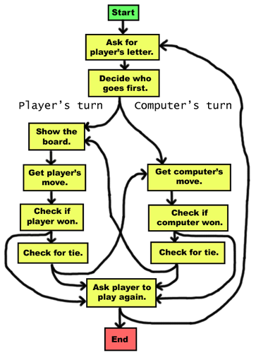
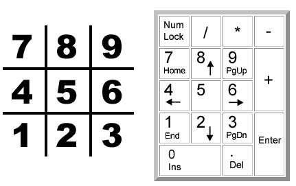
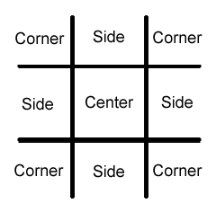
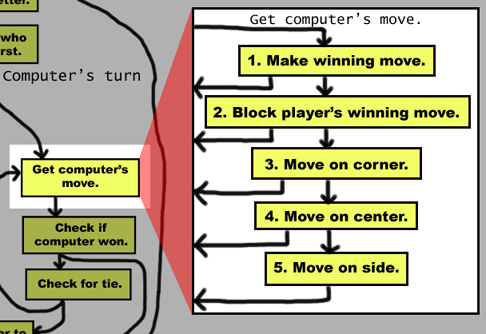
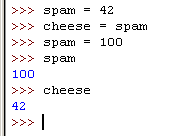
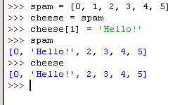
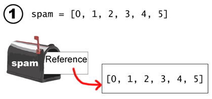
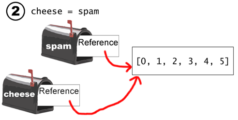
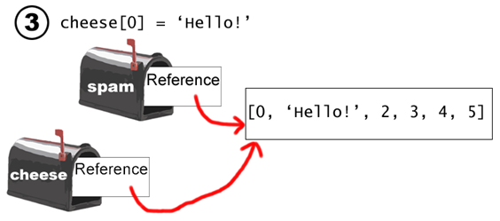
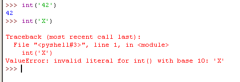

Nós iremos criar agora um jogo da velha onde o jogador disputa contra uma inteligencia artifical simples. A inteligencia artificial (ou IA) é um programa de computador que pode responder de forma inteligente contra o jogador. Esse jogo não introduz nenhum conceito complexo. Nós veremos que a inteligencia artificial por trás do Jogo da Velha é limitado nas linhas do código. Então, em uma nova janela de editor de arquivo, digite esse código fonte e salve como tictactoe.py. Então rode o jogo pressionando F5.
Bem vindo ao Jogo da Velha!
Você quer ser X ou O?
X
O computaor irá começar:.
| |
O | |
| |
-----------
| |
| |
| |
-----------
| |
| |
| |
Qual é a sua jogada? (1-9)
3
| |
O | |
| |
-----------
| |
| |
| |
-----------
| |
O | | X
| |
Qual é a sua jogada? (1-9)
4
| |
O | | O
| |
-----------
| |
X | |
| |
-----------
| |
O | | X
| |
Qual é a sua jogada? (1-9)
5
| |
O | O | O
| |
-----------
| |
X | X |
| |
-----------
| |
O | | X
| |
O computador te superou! Você perdeu.
Gostaria de jogar de novo? (sim ou não)
não
tictactoe.py
- # Jogo da Velha
- import random
- def drawBoard(board):
- # This function prints out the board that it was passed.
- # "board" is a list of 10 strings representing the board (ignore index 0)
- print ' | |'
- print ' ' + board[7] + ' | ' + board[8] + ' | ' + board[9]
- print ' | |'
- print '-----------'
- print ' | |'
- print ' ' + board[4] + ' | ' + board[5] + ' | ' + board[6]
- print ' | |'
- print '-----------'
- print ' | |'
- print ' ' + board[1] + ' | ' + board[2] + ' | ' + board[3]
- print ' | |'
- def inputPlayerLetter():
- # Let's the player type which letter they want to be.
- # Returns a list with the player's letter as the first item, and the computer's letter as the second.
- letter = ''
- while not (letter == 'X' or letter == 'O'):
- print 'Você gostaria de ser X ou 0?'
- letter = raw_input().upper()
- # the first element in the tuple is the player's letter, the second is the computer's letter.
- if letter == 'X':
- return ['X', 'O']
- else:
- return ['O', 'X']
- def whoGoesFirst():
- # Randomly choose the player who goes first.
- if random.randint(0, 1) == 0:
- return 'computador'
- else:
- return 'jogador'
- def playAgain():
- # This function returns True if the player wants to play again, otherwise it returns False.
- print 'Você gostaria de jogar novamente? (sim ou nao)'
- return raw_input().lower().startswith('y')
- def makeMove(board, letter, move):
- board[move] = letter
- def isWinner(bo, le):
- # Given a board and a player's letter, this function returns True if that player has won.
- # We use bo instead of board and le instead of letter so we don't have to type as much.
- return ((bo[7] == le and bo[8] == le and bo[9] == le) or # across the top
- (bo[4] == le and bo[5] == le and bo[6] == le) or # across the middle
- (bo[1] == le and bo[2] == le and bo[3] == le) or # across the bottom
- (bo[7] == le and bo[4] == le and bo[1] == le) or # down the left side
- (bo[8] == le and bo[5] == le and bo[2] == le) or # down the middle
- (bo[9] == le and bo[6] == le and bo[3] == le) or # down the right side
- (bo[7] == le and bo[5] == le and bo[3] == le) or # diagonal
- (bo[9] == le and bo[5] == le and bo[1] == le)) # diagonal
- def getBoardCopy(board):
- # Make a duplicate of the board list and return it the duplicate.
- dupeBoard = []
- for i in board:
- dupeBoard.append(i)
- return dupeBoard
- def isSpaceFree(board, move):
- # Return true if the passed move is free on the passed board.
- return board[move] == ' '
- def getPlayerMove(board):
- # Let the player type in their move.
- move = ' '
- while move not in '1 2 3 4 5 6 7 8 9'.split() or not isSpaceFree(board, int(move)):
- print 'Qual é a sua jogada? (1-9)'
- move = raw_input()
- return int(move)
- def chooseRandomMoveFromList(board, movesList):
- # Returns a valid move from the passed list on the passed board.
- # Returns None if there is no valid move.
- possibleMoves = []
- for i in movesList:
- if isSpaceFree(board, i):
- possibleMoves.append(i)
- if len(possibleMoves) != 0:
- return random.choice(possibleMoves)
- else:
- return None
- def getComputerMove(board, computerLetter):
- # Given a board and the computer's letter, determine where to move and return that move.
- if computerLetter == 'X':
- playerLetter = 'O'
- else:
- playerLetter = 'X'
- # Here is our algorithm for our Tic Tac Toe AI:
- # First, check if we can win in the next move
- for i in range(1, 9):
- copy = getBoardCopy(board)
- if isSpaceFree(copy, i):
- makeMove(copy, computerLetter, i)
- if isWinner(copy, computerLetter):
- return i
- # Check if the player could win on their next move, and block them.
- for i in range(1, 9):
- copy = getBoardCopy(board)
- if isSpaceFree(copy, i):
- makeMove(copy, playerLetter, i)
- if isWinner(copy, playerLetter):
- return i
- # Try to take one of the corners, if they are free.
- move = chooseRandomMoveFromList(board, [1, 3, 7, 9])
- if move != None:
- return move
- # Try to take the center, if it is free.
- if isSpaceFree(board, 5):
- return 5
- # Move on one of the sides.
- return chooseRandomMoveFromList(board, [2, 4, 6, 8])
- def isBoardFull(board):
- # Return True if every space on the board has been taken. Otherwise return False.
- for i in range(1, 10):
- if isSpaceFree(board, i):
- return False
- return True
- print 'Bem vindo ao Jogo da Velha!'
- while True:
- # Reset the board
- theBoard = [' '] * 10
- playerLetter, computerLetter = inputPlayerLetter()
- turn = whoGoesFirst()
- print 'O ' + turn + ' jogará primeiro.'
- gameIsPlaying = True
- while gameIsPlaying:
- if turn == 'player':
- # Player's turn.
- drawBoard(theBoard)
- move = getPlayerMove(theBoard)
- makeMove(theBoard, playerLetter, move)
- if isWinner(theBoard, playerLetter):
- drawBoard(theBoard)
- print 'Uha! Você ganhou!'
- gameIsPlaying = False
- else:
- if isBoardFull(theBoard):
- drawBoard(theBoard)
- print 'O jogo está empatado!'
- break
- else:
- turn = 'computador'
- else:
- # Computer's turn.
- move = getComputerMove(theBoard, computerLetter)
- makeMove(theBoard, computerLetter, move)
- if isWinner(theBoard, computerLetter):
- drawBoard(theBoard)
- print 'O computador te superou. Você perdeu.'
- gameIsPlaying = False
- else:
- if isBoardFull(theBoard):
- drawBoard(theBoard)
- print 'O jogo está empatado!'
- break
- else:
- turn = 'jogador'
- if not playAgain():
- break
O jogo da velha é um jogo muito fácil e rápido no papel. Em nosso jogo da velha no computador, podemos deixar o jogador escolher se eles querem ser o X ou 0, randomicamente escolhe quem for primeiro, e então deixa o jogador e o computador revezarem suas jogadas sobre a tela. Aqui está como o fluxograma desse jogo pode parece:

You can see a lot of the boxes on the left side of the chart are what happens during the player's turn. The right side of the chart shows what happens on the computer's turn. The player has an extra box for drawing the board because the computer doesn't need the board printed on the screen. After the player or computer makes a move, we check if they won or caused a tie, and then the game switches turns. If either the computer or player ties or wins the game, we ask the player if they want to play again.

First, we need to figure out how we are going to represent the board as a variable. We are going to represent the Tic Tac Toe board as a list of ten strings. The ten strings will represent each of the nine positions on the board (and we will ignore one of our strings). The strings will either be 'X' for the X player, 'O' for the O player, or a space string ' ' to mark a spot on the board where no one has marked yet. To make it easier to remember which index in the list is for which piece, we will mirror the numbers on the keypad of our keyboard.
(Because there is no 0 on the keypad, we will just ignore the string at index 0 in our list.)
So if we had a list with ten strings named board, then board[7] would be the top-left square on the board (either an X, O, or blank space). board[5] would be the very center. When the player types in which place they want to move, they will type a number from 1 to 9.
Just to be clear, we will label three types of spaces on the Tic Tac Toe board: corners, sides, and the center. Here is a chart of what each space is:

The AI for this game will follow a simple algorithm. An algorithm is a series of instructions to compute something. Our Tic Tac Toe AI's algorithm will determine which is the best place to move. Our algorithm will have the following steps:
This all takes place in the "Get computer's move." box on our flow chart. We could add this information to our flow chart like this:

We will implement this algorithm as code in our getComputerMove() function.
- # Tic Tac Toe
- import random
A comment and importing the random module so we can use the randint() function in our game.
- def drawBoard(board):
- # This function prints out the board that it was passed.
- # "board" is a list of 10 strings representing the board (ignore index 0)
- print ' | |'
- print ' ' + board[7] + ' | ' + board[8] + ' | ' + board[9]
- print ' | |'
- print '-----------'
- print ' | |'
- print ' ' + board[4] + ' | ' + board[5] + ' | ' + board[6]
- print ' | |'
- print '-----------'
- print ' | |'
- print ' ' + board[1] + ' | ' + board[2] + ' | ' + board[3]
- print ' | |'
This function will print out the game board, marked as directed by the board parameter. Many of our functions will work by passing the board as a list of ten strings to our functions. Be sure to get the spacing right in the strings that are printed, otherwise the board will look funny when it is printed on the screen.
Just as an example, here are some values that the board parameter could have (on the left) and what the drawBoard() function would print out:
| board data structure | drawBoard(board) output |
| [' ', ' ', ' ', ' ', 'X', 'O', ' ', 'X', ' ', 'O'] |
| | X | | O | | ----------- | | X | O | | | ----------- | | | | | | |
| [' ', 'O', 'O', ' ', ' ', 'X', ' ', ' ', ' ', ' '] |
| | | | | | ----------- | | | X | | | ----------- | | O | O | | | |
| [' ', ' ', ' ', ' ', ' ', ' ', ' ', ' ', ' ', ' '] |
| | | | | | ----------- | | | | | | ----------- | | | | | | |
| [' ', 'X', 'X', 'X', 'X', 'X', 'X', 'X', 'X', 'X'] |
| | X | X | X | | ----------- | | X | X | X | | ----------- | | X | X | X | | |
The last board filled with X's could not possibly have happened (unless the X player skipped all of the O player's turns!) But the drawBoard() function doesn't care. It just prints the board parameter that it was passed.
- def inputPlayerLetter():
- # Let's the player type which letter they want to be.
- # Returns a list with the player's letter as the first item, and the computer's letter as the second.
- letter = ''
- while not (letter == 'X' or letter == 'O'):
- print 'Do you want to be X or O?'
- letter = raw_input().upper()
The inputPlayerLetter() is a simple function. It asks if the player wants to be X or O, and will keep asking the player (with the while loop) until the player types in an X or O. Notice on line 26 that we automatically change the string returned by the call to raw_input() to uppercase letters with the upper() string method.
The while loop's condition contains parentheses, which means the expression inside the parentheses is evaluated first. If the letter variable was set to 'X', the expression would evaluate like this:
while not (letter == 'X' or letter == 'O'):
while not ('X' == 'X' or 'X' == 'O'):
while not (True or False):
while not (True):
while not True:
while False:
As you can see, if letter has the value 'X' or 'O', then the loop's condition will be False and lets the program execution continue.
- # the first element in the tuple is the player's letter, the second is the computer's letter.
- if letter == 'X':
- return ['X', 'O']
- else:
- return ['O', 'X']
This function returns a list with two items. The first item will be the player's letter, and the second will be the computer's letter. This if-else statement chooses the appropriate list to return. This is much like the getRandomWord() function in the extended version of our Hangman game in the last chapter.
- def playAgain():
- # This function returns True if the player wants to play again, otherwise it returns False.
- print 'Do you want to play again? (yes or no)'
- return raw_input().lower().startswith('y')
The playAgain() function asks the player if they want to play another game. The function returns True if the player types in 'yes' or 'YES' or 'y' or anything that begins with the letter Y. For any other response, the function returns False. The order of the method calls on line 151 is important. The return value from the call to the raw_input() function is a string that has its lower() method called on it. The lower() method returns another string (the lowercase string) and that string has its startswith() method called on it, passing the argument 'y'.
There is no loop, because we assume that if the user entered anything besides a string that begins with 'y', they want to stop playing. So, we only ask the player once.
- def makeMove(board, letter, move):
- board[move] = letter
The makeMove() function is very simple and only one line. The parameters are a list with ten strings named board, one of the player's letters (either 'X' or 'O') named letter, and a place on the board where that player wants to go (which is an integer from 1 to 9) named move.
But wait a second. You might think that this function does nothing at all. It seems to change one of the items in the board list to the value in letter. But because this code is in a function, the board variable will be forgotten when we exit this function and leave the function's scope.
Actually, this is not the case. This is because lists are special when you pass them as arguments to functions. This is because what actually happens is you pass a reference to the list.
Try typing the following into the shell:
spam = 42
cheese = spam
spam = 100
spam
cheese
When you type this into the shell, it should look like this:

This makes sense from what we know so far. We assign 42 to the spam variable, then we copy the value in spam and assign it to the variable cheese. When we later change the value in spam to 100, this doesn't affect the value in cheese.
But lists don't work this way. When you assign a list to a variable with the = sign, you are actually assigning a reference to the list. A reference is a pointer to some bit of data. When you assign a list variable to a second variable, you are actually copying the reference and no the list itself. This is because the first variable doesn't contain a list, it contains a reference to a list.
Here is some code that will make this easier to understand. Type this into the shell:
spam = [0, 1, 2, 3, 4, 5]
cheese = spam
cheese[1] = 'Hello!'
spam
cheese
This code will look like this:

Notice that the line cheese = spam copies the reference in spam to cheese. This means that both spam and cheese refer to the same list. So when you modify cheese on the cheese[1] = 'Hello!' line, you are modifying the same list that spam refers to. This is why spam seems to have the same list value that cheese does.
Remember when you first learned about variables, I said that variables were like mailboxes that contain values. List variables don't actually contain lists at all, they contain references to lists. Here are some pictures that explain what happens in the code you just typed in:

On the first line, the actual list is not contained in the spam variable, but a reference to the list is.

When you assign the reference in spam to cheese, the cheese variable contains a copy of the reference in spam. Now both cheese and spam refer to the same list.

When you alter the list that cheese refers to, the list that spam refers to is also changed because they are the same list.
Let's go back to the makeMove() function:
- def makeMove(board, letter, move):
- board[move] = letter
When we pass a list value as the argument for the board parameter, we are actually passing a copy of the reference, not the list itself. The letter and move parameters are copies of the string and integer values that we pass. Since they are copies, if we modify letter or move in this function, the original variables we used when we called makeMove() would not be modified. Only the copies would be modified.
But a copy of the reference still refers to the same list that the original reference refers to. So if we make changes to board in this function, the original list is modified. When we exit the makeMove() function, the copy of the reference is forgotten along with the other parameters. But since we were actually changing the original list, those changes remain after we exit the function. This is how the makeMove() function modifies the argument that it is passed.
- def isWinner(bo, le):
- # Given a board and a player's letter, this function returns True if that player has won.
- # We use bo instead of board and le instead of letter so we don't have to type as much.
- return ((bo[7] == le and bo[8] == le and bo[9] == le) or # across the top
- (bo[4] == le and bo[5] == le and bo[6] == le) or # across the middle
- (bo[1] == le and bo[2] == le and bo[3] == le) or # across the bottom
- (bo[7] == le and bo[4] == le and bo[1] == le) or # down the left side
- (bo[8] == le and bo[5] == le and bo[2] == le) or # down the middle
- (bo[9] == le and bo[6] == le and bo[3] == le) or # down the right side
- (bo[7] == le and bo[5] == le and bo[3] == le) or # diagonal
- (bo[9] == le and bo[5] == le and bo[1] == le)) # diagonal
Lines 53 to 60 in the isWinner() function are actually one very long if statement. We use bo and le for the board and letter parameters so that we have less to type in this function. (This is a trick programmers sometimes use to reduce the amount they need to type. Be sure to add a comment though, otherwise you may forget what bo and le are supposed to mean.)
There are eight possible ways to win at Tic Tac Toe. First, have a line across the top, middle, and bottom. Second, have a line down the left, middle, or right. And finally, have either of the two diagonals. Note that each line of the condition checks if the three spaces are equal to the letter provided (combined with the and, and we use the or operator to combine the eight different ways to win. This means only one of the eight ways must be true in order for us to say that the player who owns letter in le is the winner.
Let's pretend that le is 'O', and the board looks like this:
|
| | X | | | | ----------- | | | X | | | ----------- | | O | O | O | | |
If the board looks like that, then bo must be equal to [' ', 'O', 'O', 'O', ' ', 'X', ' ', 'X', ' ', ' ']. Remember that an Here is how the expression after the return keyword would evaluate:
- return ((bo[7] == le and bo[8] == le and bo[9] == le) or # across the top
- (bo[4] == le and bo[5] == le and bo[6] == le) or # across the middle
- (bo[1] == le and bo[2] == le and bo[3] == le) or # across the bottom
- (bo[7] == le and bo[4] == le and bo[1] == le) or # down the left side
- (bo[8] == le and bo[5] == le and bo[2] == le) or # down the middle
- (bo[9] == le and bo[6] == le and bo[3] == le) or # down the right side
- (bo[7] == le and bo[5] == le and bo[3] == le) or # diagonal
- (bo[9] == le and bo[5] == le and bo[1] == le)) # diagonal
- return (('X' == 'O' and ' ' == 'O' and ' ' == 'O') or # across the top
- (' ' == 'O' and 'X' == 'O' and ' ' == 'O') or # across the middle
- ('O' == 'O' and 'O' == 'O' and 'O' == 'O') or # across the bottom
- ('X' == 'O' and ' ' == 'O' and 'O' == 'O') or # down the left side
- (' ' == 'O' and 'X' == 'O' and 'O' == 'O') or # down the middle
- (' ' == 'O' and ' ' == 'O' and 'O' == 'O') or # down the right side
- ('X' == 'O' and 'X' == 'O' and 'O' == 'O') or # diagonal
- (' ' == 'O' and 'X' == 'O' and 'O' == 'O')) # diagonal
- return ((False and False and False) or # across the top
- (False and False and False) or # across the middle
- (True and True and True) or # across the bottom
- (False and False and True) or # down the left side
- (False and False and True) or # down the middle
- (False and False and True) or # down the right side
- (False and False and True) or # diagonal
- (False and False and True)) # diagonal
- return ((False) or # across the top
- (False) or # across the middle
- (True) or # across the bottom
- (False) or # down the left side
- (False) or # down the middle
- (False) or # down the right side
- (False) or # diagonal
- (False)) # diagonal
- return (False or # across the top
- False or # across the middle
- True or # across the bottom
- False or # down the left side
- False or # down the middle
- False or # down the right side
- False or # diagonal
- False) # diagonal
- return (True)
- return True
So given those values for bo and le, the expression would evaluate to True. Remember that the value of le matters. If le is 'O' and X has won the game, the isWinner() would return False.
- def getBoardCopy(board):
- # Make a duplicate of the board list and return it the duplicate.
- dupeBoard = []
- for i in board:
- dupeBoard.append(i)
- return dupeBoard
The getBoardCopy() function is here so that we can easily make a copy of a given 10-string list that represents a Tic Tac Toe board in our game. There are times that we will want our AI algorithm to make temporary modifications to the board without changing the original board. In that case, we call this function.
Line 64 actually creates a brand new board, because it is not copying another variable's reference to an existing board. The for loop will go through the board argument that is passed to this function, appending the values in the original board to our duplicate board. Finally, after the loop, we will return the dupeBoard variable's reference to the duplicate board.
- def isSpaceFree(board, move):
- # Return true if the passed move is free on the passed board.
- return board[move] == ' '
This is a simple function that, given a Tic Tac Toe board and a possible move, will return if that move is available or not. Remember that free spaces on our board lists are marked as a single space string.
- def getPlayerMove(board):
- # Let the player type in their move.
- move = ' '
- while move not in '1 2 3 4 5 6 7 8 9'.split() or not isSpaceFree(board, int(move)):
- print 'What is your next move? (1-9)'
- move = raw_input()
- return int(move)
The getPlayerMove() function asks the player to enter the number for the space they wish to move. The function makes sure that the enter a space that is 1) a valid space (an integer 1 through 9), and 2) a space that is not already taken, given the Tic Tac Toe board passed to the function in the board parameter.
The two lines of code inside the while loop simply ask the player to enter a number from 1 to 9. The loop's condition will keep looping, that is, it will keep asking the player for a space, as long as the condition is True. The condition is True if either of the expressions on the left or right side of the or keyword is True.
The expression on the left side checks if the move that the player entered is equal to '1', '2', '3', and so on up to '9' by creating a list with these strings (with the split() method) and checking if move is in this list. '1 2 3 4 5 6 7 8 9'.split() evaluates to be the same as ['1', '2', '3', '4', '5', '6', '7', '8', '9'], but it easier to type.
The expression on the right side checks if the move that the player entered is a free space on the board. It checks this by calling the isSpaceFree() function we just wrote. Remember that isSpaceFree() will return True if the move we pass it is available on the board we pass it. Note that isSpaceFree() expects an integer for move, so we use the int() function to evaluate an integer form of move.
We add the not operators to both sides so that the condition will be True when both of these requirements are unfulfilled. This will cause the loop to ask the player again and again until they enter a proper move.
Finally, on line 81, we will return the integer form of whatever move the player entered. Remember that raw_input() returns a string, so we will want to use the int() function to evaluate the string as an integer.
You may have noticed there is a possible problem in our getPlayerMove() function. What if the player typed in 'X' or some other non-integer string? The move not in '1 2 3 4 5 6 7 8 9'.split() would return False as expected, and then we would evaluate the expression on the right side. But when we pass 'X' (the value in move to the int() function, the call to int() would give us an error. It gives us this error because the int() function can only take strings of number characters, like '9' or '42', not strings like 'X'
As an example of this kind of error, try typing this into the shell:
int('42')
int('X')

But when you play our Tic Tac Toe game and try typing 'X' in for your move, this error doesn't happen. The reason is because the while loop's condition is being short-circuited.
What short-circuiting means is that because the expression on the left side of the or keyword (move not in '1 2 3 4 5 6 7 8 9'.split()) evaluates to True, the Python interpreter knows that the entire expression will evaluate to True no matter if the expression on the right side of the or keyword evaluates to True or False. So Python doesn't even bother calling the function. This works out well for us, because if the expression on the right side is True, that means that move is not a string in number form and would cause int() to give us an error. The only times the expression on the left evaluate to False are when move is a string of the numbers 1 to 9, so the call to int() would not give us an error.
Here's a short program that gives you a good example of short-circuiting. Open a new file in the IDLE editor and type in this program, then press F5 to run it:
- def TrueFizz(message):
- print message
- return True
- def FalseFizz(message):
- print message
- return False
- if FalseFizz('Cats') or TrueFizz('Dogs'):
- print 'Step 1'
- if TrueFizz('Hello') or TrueFizz('Goodbye'):
- print 'Step 2'
- if TrueFizz('Spam') and TrueFizz('Cheese'):
- print 'Step 3'
- if FalseFizz('Red') and TrueFizz('Blue'):
- print 'Step 4'
When you run this program, you can see the output is:
| Cats Dogs Step 1 Hello Step 2 Spam Cheese Step 3 Red |
This small program has two functions, TrueFizz() and FalseFizz(). TrueFizz() will display a message and return the value True, while FalseFizz() will display a message and return the value False. This will help us determine when these functions are being called, or when these functions are being skipped due to short-circuiting.
The first if statement on line 9 in our small program will first evaluate TrueFizz(). We know this happens because Cats is printed to the screen. The entire expression could still be True if the expression to the right of the or keyword is True. So the call TrueFizz('Dogs') is evaluated, Dogs is printed to the screen and True is returned. The if statement's condition evaluates to False or True, which in turn evaluates to True. Step 1 is then printed to the screen. No short-circuiting took place for this expression's evaluation.
The second if statement on line 12 does have short-circuiting. This is because when we call TrueFizz('Hello'), it prints Hello and returns True. Because it doesn't matter what is on the right side of the or keyword, the Python interpreter doesn't call TrueFizz('Goodbye'). You can tell it is not called because Goodbye is not printed to the screen. The if statement's condition is True, so Step 2 is printed to the screen.
The third if statement on line 15 does not have short-circuiting. The call to TrueFizz('Spam') returns True, but we do not know if the entire condition is True or False because of the and operator. So Python will call TrueFizz('Cheese'), which prints Cheese and returns True. The if statement's condition is evaluated to True and True, which in turn evaluates to True. Because the condition is True, Step 3 is printed to the screen.
The fourth if statement on line 18 does have short-circuiting. The FalseFizz('Red') call prints Red and returns False. Because the left side of the and keyword is False, it does not matter if the right side is True or False, the condition will evaluate to False anyway. So TrueFizz('Blue') is not called and Blue does not appear on the screen. Because the if statement's condition evaluated to False, Step 4 is not printed to the screen.
Short-circuiting can happen for any expression that includes the boolean operators, and or or. It is important to remember that this can happen, otherwise you may find that some function calls in the expression are never called and you will not know why.
- def chooseRandomMoveFromList(board, movesList):
- # Returns a valid move from the passed list on the passed board.
- # Returns None if there is no valid move.
- possibleMoves = []
- for i in movesList:
- if isSpaceFree(board, i):
- possibleMoves.append(i)
The chooseRandomMoveFromList function will be of use to us when we are implementing the code for our AI. The first parameter board is the 10-string list that represents a Tic Tac Toe board. The second parameter movesList is a list of integers that represent possible moves. For example, if movesList is [1, 3, 7, 9], then that means we should return the number for one of the corner spaces on the board. This function will choose on of those moves from the list. It also makes sure that the move that it chooses is not already taken. To do this, we create a blank list and assign it to possibleMoves. The for loop will go through the list of moves passed to this function in movesList. If that move is available (which we figure out with a call to isSpaceFree()), then we add it to possibleMoves with the append() method.
- if len(possibleMoves) != 0:
- return random.choice(possibleMoves)
- else:
- return None
At this point, the possibleMoves list has all of the moves that were in movesList that are also free spaces on the board represented by board. If the list is not empty, then
This list might be empty. For example, if movesList was [1, 3, 7, 9] but the board represented by the board parameter had all the corner spaces already taken, the possibleMoves list would have been empty.
If possibleMoves is empty, then len(possibleMoves) will evaluate to 0 and the code in the else-block will execute. Notice that it returns something called None.
None is a special value that you can assign to a variable. None is the only value of the data type NoneType. None represents the lack of a value. It can be very useful to use the None value when you have not set a variables value yet. For example, say you had a variable named quizAnswer which holds the user's answer to some True-False pop quiz question. You could set None to None if the user skipped the question or did not answer it. Using None would be better because if you set it to True or False before assigning the value of the user's answer, it may look like the user gave an answer the question even though they didn't. Remember, None is very handy to when you want to represent the lack of a value.
Calls to functions that do not return anything (that is, they exit by reaching the end of the function and not from a return statement) will evaluate to None. The None value is written without quotes and with a capital "N" and lowercase "one".
- def getComputerMove(board, computerLetter):
- # Given a board and the computer's letter, determine where to move and return that move.
- if computerLetter == 'X':
- playerLetter = 'O'
- else:
- playerLetter = 'X'
The None function is where our AI will be coded. The parameters are a Tic Tac Toe board (in the board parameter) and which letter the computer is (either 'X' or 'O'). The first few lines simply assign the other letter to a variable named None. This lets use the same code, no matter who is X and who is O. This function will return the integer that represents which space the computer will move.
Remember how our algorithm works:
- # Here is our algorithm for our Tic Tac Toe AI:
- # First, check if we can win in the next move
- for i in range(1, 9):
- copy = getBoardCopy(board)
- if isSpaceFree(copy, i):
- makeMove(copy, computerLetter, i)
- if isWinner(copy, computerLetter):
- return i
More than anything, if the computer can win in one more move, the computer should make that move. We will do this by trying each of the nine spaces on the board with a for loop. The first line in the loop makes a copy of the board list. This is because we want to make a move on the copy of the board, and then see if that move results in the computer winning. We don't want to modify the original Tic Tac Toe board, which is why we make a call to getBoardCopy(). We check if the space we will move is free, and if so, we move on that space and see if this results in winning. If it does, we return that space's integer.
If moving on none of the spaces results in winning, then the loop will finally end and we move on to line 112.
- # Check if the player could win on their next move, and block them.
- for i in range(1, 9):
- copy = getBoardCopy(board)
- if isSpaceFree(copy, i):
- makeMove(copy, playerLetter, i)
- if isWinner(copy, playerLetter):
- return i
At this point, we know we cannot win in one move. So we want to make sure the human player cannot win in one more move. The code is very similar, except on the copy of the board, we place the player's letter before calling the isWinner() function. If there is a position the player can move that will let them win, the computer should move there.
If the human player cannot win in one more move, the for loop will eventually stop and execution continues on to line 120.
- # Try to take one of the corners, if they are free.
- move = chooseRandomMoveFromList(board, [1, 3, 7, 9])
- if move != None:
- return move
Our call to chooseRandomMoveFromList() with the list of [1, 3, 7, 9] will ensure that it returns the integer for one of the corner spaces. (Remember, the corner spaces are represented by the integers 1, 3, 7, and 9. If all the corner spaces are taken, our chooseRandomMoveFromList() function will return the None value. In that case, we will move on to line 125.
- # Try to take the center, if it is free.
- if isSpaceFree(board, 5):
- return 5
If none of the corners are available, we will try to move on the center space if it is free. If the center space is not free, the execution moves on to line 129.
- # Move on one of the sides.
- return chooseRandomMoveFromList(board, [2, 4, 6, 8])
This code also makes a call to chooseRandomMoveFromList(), except we pass it a list of the side spaces ([2, 4, 6, 8]). We know that this function will not return None, because the side spaces are the only spaces we have not yet checked. This is the end of the getComputerMove() function and our AI algorithm.
- def isBoardFull(board):
- # Return True if every space on the board has been taken. Otherwise return False.
- for i in range(1, 10):
- if isSpaceFree(board, i):
- return False
- return True
The last function we will write is isBoardFull(), which returns True if the 10-string list board argument it was passed has an 'X' or 'O' on every single space. If there is at least one space in board that is set to a single space ' ' then it will return False.
The for loop will let us check spaces 1 through 9 on the Tic Tac Toe board. (Remember that range(1, 10) call returns the list [1, 2, 3, 4, 5, 6, 7, 8, 9].) As soon as it finds a free space in the board (that is, when isSpaceFree(board, i) returns True), the isBoardFull() function will return False.
If execution manages to go through every iteration of the loop, we will know that none of the spaces are free. So at that point, we will execute return True.
- print 'Welcome to Tic Tac Toe!'
Line 140 is the first line that isn't inside of a function, so it is the first line of code that is executed when we run this program.
- while True:
- # Reset the board
- theBoard = [' '] * 10
This while loop has True for the condition, so that means we will keep looping in this loop until we encounter a break statement. Line 144 sets up the main Tic Tac Toe board that we will use, named theBoard. It is a 10-string list, where each string is a single space ' '. Remember the little trick using the multiplication operator with a list to reproduce it. [' '] * 10 is the evaluates to [' ', ' ', ' ', ' ', ' ', ' ', ' ', ' ', ' ', ' '], but is shorter for us to type.
- playerLetter, computerLetter = inputPlayerLetter()
The inputPlayerLetter() function lets the player type in whether they want to be X or O. The function returns a 2-string list, either ['X', 'O'] or ['O', 'X']. We use the multiple assignment trick here that we learned in the Hangman chapter. If inputPlayerLetter() returns ['X', 'O'], then playerLetter is 'X' and computerLetter is 'O'. If inputPlayerLetter() returns ['O', 'X'], then playerLetter is 'O' and computerLetter is 'X'.
- turn = whoGoesFirst()
- print 'The ' + turn + ' will go first.'
- gameIsPlaying = True
The whoGoesFirst() function randomly decides who goes first, and returns either the string 'player' or the string 'computer'. On line 147, we tell the player who will go first. The gameIsPlayer variable is what we will use to keep track of if the game has been won, lost, or tied or if we should keep going to the other player's turn.
- while gameIsPlaying:
This is a loop that will keep going back and forth between the player's turn and the computer's turn, as long as gameIsPlaying is set to True.
- if turn == 'player':
- # Player's turn.
- drawBoard(theBoard)
- move = getPlayerMove(theBoard)
- makeMove(theBoard, playerLetter, move)
The turn variable was originally set by whoGoesFirst(). It is either set to 'player' or 'computer'. If turn contains the string 'computer', then the condition is False and execution will jump down to line 169.
The first thing we do when it is the player's turn (according to the flow chart we drew at the beginning of this chapter) is show the board to the player. The drawBoard() function, called with the theBoard variable, will print the board on the screen. We then let the player type in their move by calling our getPlayerMove() function, and set the move on the board by calling our makeMove() function.
- if isWinner(theBoard, playerLetter):
- drawBoard(theBoard)
- print 'Hooray! You have won the game!'
- gameIsPlaying = False
Now that the player has made their move, our program should check if they have won the game with this move. If the isWinner() function returns True, we should show them the winning board (the previous call to drawBoard() shows the board BEFORE they made the winning move) and print a message telling them they have won.
Then we set gameIsPlaying to False so that execution does not continue on to the computer's turn.
- else:
- if isBoardFull(theBoard):
- drawBoard(theBoard)
- print 'The game is a tie!'
- break
If the player did not win with their last move, then maybe their last move filled up the entire board and we now have a tie. In this else-block, we check if the board is full with a call to the isBoardFull() function. If it returns True, then we should draw the board by calling drawBoard() and tell the player a tie has occurred. The break statement will break us out of the while loop we are in and jump down to line 186.
- else:
- turn = 'computer'
If the player has not won or tied the game, then we should just set the turn variable to 'computer' so that when this while loop loops back to the start it will execute the code for the computer's turn.
- else:
If the turn variable was not set to 'player', then we know it is the computer's turn and the code in this else-block will execute. This code is very similar to the code for the player's turn, except the computer does not need the board printed on the screen so we skip the call to the drawBoard() function.
- # Computer's turn.
- move = getComputerMove(theBoard, computerLetter)
- makeMove(theBoard, computerLetter, move)
This code is almost identical to the code for the player's turn.
- if isWinner(theBoard, computerLetter):
- drawBoard(theBoard)
- print 'The computer has beaten you! You lose.'
- gameIsPlaying = False
We want to check if the computer won with it's last move. The reason we call drawBoard() here is because the player will want to see what move the computer made to win the game. We then set gameIsPlaying to False so that the game does not continue.
- else:
- if isBoardFull(theBoard):
- drawBoard(theBoard)
- print 'The game is a tie!'
- break
These lines of code are identical to the code on lines 162 to 165. The only difference is this is a check for a tied game after the computer has moved.
- else:
- turn = 'player'
If the game is neither won by the computer nor tied, it then becomes the player's turn. There are no more lines of code inside the while loop, so execution would jump back to the while statement on line 150.
- if not playAgain():
- break
These lines of code are located immediately after the while-block started by the while statement on line 150. Remember, we would only exit out of that while loop if it's condition (the gameIsPlaying variable) was False. gameIsPlaying is set to False when the game has ended, so at this point we are going to ask the player if they want to play again.
Remember, when we evaluate the condition in this False statement, we call the False function which will let the user type in if they want to play or not. playAgain() will return True if the player typed something that began with a 'y' like 'yes' or 'y'. Otherwise playAgain() will return False.
If playAgain() returns False, then the if statement's condition is True (because of the not operator that reverses the boolean value) and we execute the break statement. That breaks us out of the while loop that was started on line 142. But there are no more lines of code after that while-block, so the program terminates.
And that's the entire Tic Tac Toe game. If you want to see the code in action, go to the following web page to see the how the program executes line by line:
Things Covered In This Chapter:
- Artificial Intelligence
- List References
- Short-Circuit Evaluation
- The None Value